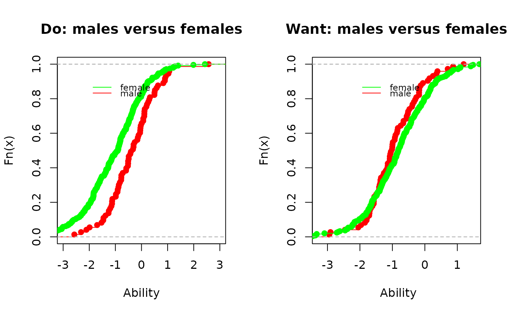

Draws plausible values based on test scores
plausible_values( dataSrc, parms = NULL, predicate = NULL, covariates = NULL, nPV = 1, use_draw = NULL, prior.dist = c("normal", "mixture"), merge_within_persons = FALSE )
| dataSrc | a connection to a dexter database, a matrix, or a data.frame with columns: person_id, item_id, item_score |
|---|---|
| parms | An object returned by function |
| predicate | an expression to filter data. If missing, the function will use all data in dataSrc |
| covariates | name or a vector of names of the variables to group the populations used to improve the prior. A covariate must be a discrete person property (e.g. not a float) that indicates nominal categories, e.g. gender or school. If dataSrc is a data.frame, it must contain the covariate. |
| nPV | Number of plausible values to draw per person. |
| use_draw | When the ENORM was fitted with a Gibbs sampler, this specifies the use of a particular sample of item parameters used to generate the plausible value(s). If NULL, the posterior means are used. If outside range, the last iteration will be used. |
| prior.dist | use a normal prior or a mixture of two normals recognised automatically), |
| merge_within_persons | If a person took multiple booklets, this indicates whether plausible values are generated per person (TRUE) or per booklet (FALSE) |
A data.frame with columns booklet_id, person_id, booklet_score and nPV plausible values named PV1...PVn.
Marsman, M., Maris, G., Bechger, T. M., and Glas, C.A.C. (2016) What can we learn from plausible values? Psychometrika. 2016; 81: 274-289. See also the vignette.
db = start_new_project(verbAggrRules, ":memory:", person_properties=list(gender="<unknown>")) add_booklet(db, verbAggrData, "agg")#>#> $items #> [1] "S1DoCurse" "S1DoScold" "S1DoShout" "S1WantCurse" "S1WantScold" #> [6] "S1WantShout" "S2DoCurse" "S2DoScold" "S2DoShout" "S2WantCurse" #> [11] "S2WantScold" "S2WantShout" "S3DoCurse" "S3DoScold" "S3DoShout" #> [16] "S3WantCurse" "S3WantScold" "S3WantShout" "S4DoCurse" "S4DoScold" #> [21] "S4DoShout" "S4WantCurse" "S4WantScold" "S4WantShout" #> #> $person_properties #> [1] "gender" #> #> $columns_ignored #> [1] "anger" #>#> 4 item properties for 24 items added or updatedf=fit_enorm(db) pv_M=plausible_values(db,f,(mode=="Do")&(gender=="Male")) pv_F=plausible_values(db,f,(mode=="Do")&(gender=="Female")) par(mfrow=c(1,2)) plot(ecdf(pv_M$PV1), main="Do: males versus females", xlab="Ability", col="red") lines(ecdf(pv_F$PV1), col="green") legend(-2.2,0.9, c("female", "male") , lty=1, col=c('green', 'red'), bty='n', cex=.75) pv_M=plausible_values(db,f,(mode=="Want")&(gender=="Male")) pv_F=plausible_values(db,f,(mode=="Want")&(gender=="Female")) plot(ecdf(pv_M$PV1), main="Want: males versus females", xlab=" Ability", col="red")